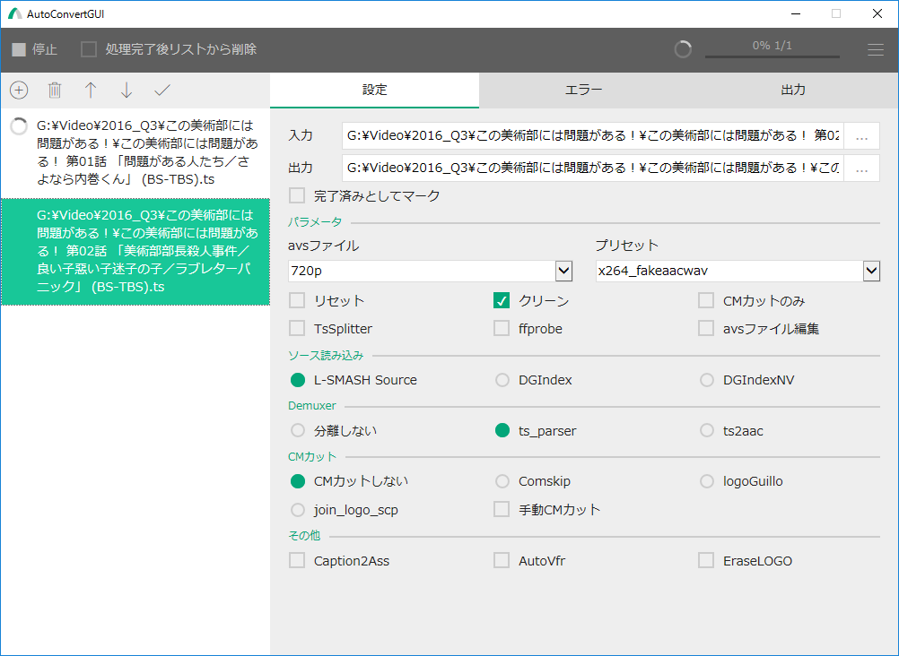

使い方
AutoConvertUtilily
acutil.batにTSファイルをドラッグ&ドロップします。
AutoConvertGUI(推奨)
1. acgui.batを起動します。acgui.batにTSファイルをドラッグ&ドロップしても起動できます。初回起動時にはビルドがあります。
2. 追加ボタンをクリックしてダイアログでTSを選択して追加します。ドラッグ&ドロップを有効にしている場合、リストにドラッグ&ドロップして追加できます。
3. パラメータを変更します。パラメータに問題がある場合はエラータブに表示されます。
4. 左上の開始ボタンをクリックし、処理を開始します。進捗は出力タブに表示されます。また、全体の進捗は右上に表示されます。